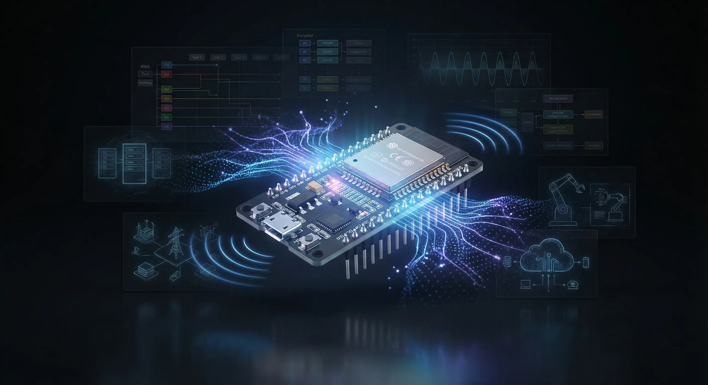

Comparing ESP32 vs ESP8266 for New IoT Designs

Introduction to ESP32 and ESP8266
The ESP32 and ESP8266 are two of the most popular microcontroller boards used in IoT projects. Both boards are developed by Espressif Systems and are known for their low cost, low power consumption, and ease of use. In this article, we will compare the ESP32 and ESP8266 to help you decide which board is best for your new IoT design.
ESP32 Overview
The ESP32 is a more advanced board compared to the ESP8266. It has a dual-core processor, 4MB of flash memory, and 520KB of SRAM. The ESP32 also has built-in support for Bluetooth, Wi-Fi, and Ethernet, making it a great choice for projects that require wireless connectivity. Additionally, the ESP32 has a wide range of peripherals, including GPIO, UART, SPI, and I2C.
ESP8266 Overview
The ESP8266 is a single-core processor board with 4MB of flash memory and 96KB of SRAM. While it has less memory and processing power compared to the ESP32, it is still a great choice for simple IoT projects that require Wi-Fi connectivity. The ESP8266 also has a range of peripherals, including GPIO, UART, SPI, and I2C.
Comparison of ESP32 and ESP8266
Both the ESP32 and ESP8266 have their own strengths and weaknesses. The ESP32 is more powerful and has more features, but it is also more expensive. The ESP8266 is less expensive, but it has less memory and processing power. Here are some key differences between the two boards:
- Processor: The ESP32 has a dual-core processor, while the ESP8266 has a single-core processor.
- Memory: The ESP32 has more memory (4MB flash, 520KB SRAM) compared to the ESP8266 (4MB flash, 96KB SRAM).
- Wireless Connectivity: Both boards have Wi-Fi, but the ESP32 also has built-in Bluetooth and Ethernet.
- Peripherals: Both boards have a range of peripherals, including GPIO, UART, SPI, and I2C.
- Cost: The ESP8266 is less expensive than the ESP32.
Conclusion
In conclusion, both the ESP32 and ESP8266 are great choices for IoT projects. The ESP32 is more powerful and has more features, making it a great choice for complex projects that require wireless connectivity. The ESP8266 is less expensive and has less memory and processing power, making it a great choice for simple projects that require Wi-Fi connectivity. Ultimately, the choice between the ESP32 and ESP8266 will depend on your specific needs and requirements.